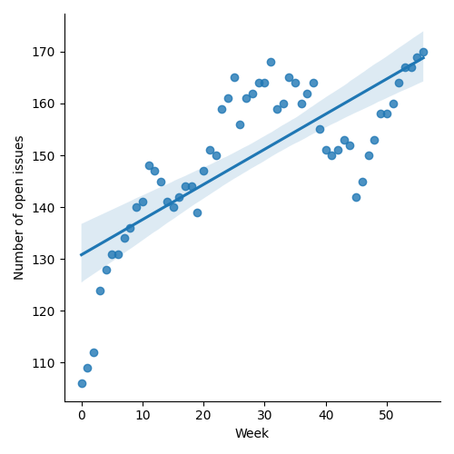
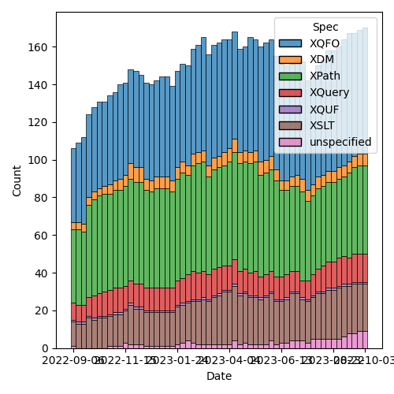
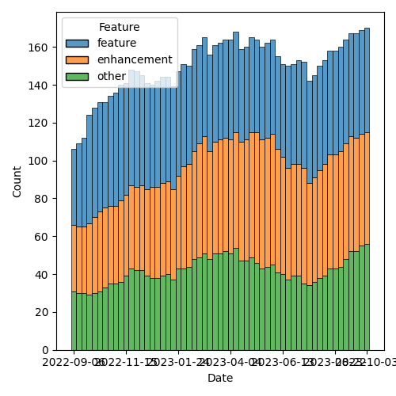

QT4 CG Meeting 049 Minutes 2023-10-10
Table of Contents
- Draft Minutes
- Summary of new and continuing actions
[0/7] - 1. Administrivia
- 2. Technical Agenda
- 3. Any other business?
- 4. Adjourned
Agenda index / QT4CG.org / Dashboard / GH Issues / GH Pull Requests
Draft Minutes
Summary of new and continuing actions [0/7]
[ ]QT4CG-045-02: RD to address comments on HTML namespaces in another PR[ ]QT4CG-046-01: MK to continue the work on #129 for the other specs (we accepted #703)[ ]QT4CG-046-04: CG to flesh out changes related to annotations in other parts of the specs[ ]QT4CG-046-05: NW to updated parse-uri to use decode-from-uri (issue #566)[ ]QT4CG-048-01: MK - to identify what happens with the mode default rule behaviours.[ ]QT4CG-048-02: MK to clean up the proposal for adding @as to xsl:sequence and elsewhere[ ]QT4CG-049-01: MK to make sure CastTarget is defined locally[ ]QT4CG-049-02: NW to sort out what has made the dashboard so unwieldy
1. Administrivia
1.1. Roll call [10/11]
Regrets JL
[X]Reece Dunn (RD)[X]Sasha Firsov (SF)[X]Christian Grün (CG)[X]Joel Kalvesmaki (JK) [:15-][X]Michael Kay (MK)[ ]John Lumley (JL)[X]Dimitre Novatchev (DN)[X]Wendell Piez (WP)[X]Ed Porter (EP)[X]C. M. Sperberg-McQueen (MSM)[X]Norm Tovey-Walsh (NW). Scribe. Chair.
1.2. Accept the agenda
Proposal: Accept the agenda.
Accepted.
1.2.1. Status so far…

Figure 1: “Burn down” chart on open issues

Figure 2: Open issues by specification

Figure 3: Open issues by type
1.3. Approve minutes of the previous meeting
Proposal: Accept the minutes of the previous meeting.
Accepted.
1.4. Next meeting
The next meeting is scheduled for Tuesday, 17 October 2023.
JL gave regrets for the 17th as well. EP gives regrets.
1.5. Review of open action items [6/12]
[X]QT4CG-029-07: NW to open the next discussion of #397 with a demo from DN- See PR #449. Discussion planned for meeting 049, 10 October 2023.
[ ]QT4CG-045-02: RD to address comments on HTML namespaces in another PR[ ]QT4CG-046-01: MK to continue the work on #129 for the other specs (we accepted #703)[X]QT4CG-046-02: RD to draft the specification changes to allow record(*)[X]QT4CG-046-03: MK to roll back the changes related to default namespaces for elments and types (issue #372)[ ]QT4CG-046-04: CG to flesh out changes related to annotations in other parts of the specs[ ]QT4CG-046-05: NW to updated parse-uri to use decode-from-uri (issue #566)[X]QT4CG-047-01: MK to make a PR that renames break-when to split-when[ ]QT4CG-048-01: MK - to identify what happens with the mode default rule behaviours.[ ]QT4CG-048-02: MK to clean up the proposal for adding @as to xsl:sequence and elsewhere[X]QT4CG-048-03: MK 5.4. - the section on type patterns - replace 3rd paragraph - belongs with predicate patterns. Fix cut-and-paste issues.[X]QT4CG-048-04: MK to use xs: prefix
1.6. Review of open pull requests and issues
1.6.1. Blocked
The following PRs are open but have merge conflicts or comments which suggest they aren’t ready for action.
1.6.2. Merge without discussion
The following PRs are editorial, small, or otherwise appeared to be uncontroversial when the agenda was prepared. The chairs propose that these can be merged without discussion. If you think discussion is necessary, please say so.
- PR #732: 731 Capturing accumulators: Add error conditions, revise streaming rules
- PR #728: 52 Allow record(*)
- PR #727: 725 Add clarification note for load-xquery-module
- PR #715: 372 Rollback the default namespace changes
- PR #650: 649: fix an xsl:fallback problem
Accepted.
1.6.3. Close without action
It has been proposed that the following issues be closed without action. If you think discussion is necessary, please say so.
None this week.
1.6.4. XSLT focused
The following PRs appear to be candidates for a future XSLT-focussed meeting.
- PR #470: 369 add fixed-prefixes attribute in XSLT
These issues identify the XSLT-focused changes that have been made to the specifications but which have not been established by the community group as the status quo.
1.6.5. Substantive PRs
The following substantive PRs were open when this agenda was prepared.
- PR #737: 295 Boost the capability of recursive record types
- PR #736: 730: Clarify (and correct) rules for maps as instances of function types
- PR #734: 517: fn:chain
- PR #719: 413: Spec for CSV-related functions
- PR #691: 688 Semantics of local union types, enumeration types, etc
- PR #659: 647: schema location hints
1.6.6. Requires confirmation
These issues identify changes that have been made to the specifications but which have not been established by the community group as the status quo.
- Issue #571: XSLT: xsl:for-each-group/@break-when
- Resolved in meeting 047
- Issue #372: Separate default namespace for elements from the default namespace for types
- Resolved in meeting 046, abandon this change
- Issue #283: Enumeration types
- TBD
- Issue #233: Declare the result type of a mode, via @as
- Resolved in meeting 048
- Issue #172: Record Tests
- Resolved in meeting 048
1.6.7. Proposed for V4.0
The following issues are labled “proposed for V4.0”.
2. Technical Agenda
2.1. Issue #397: Type names
See #397
We’ll begin this week with a demo by DN and a discussion of this issue.
- DN begins with a description of an XPath function library
- … A function returns a map that from strings to (usually) functions
- … Could be constants or other variables
- (Scribe fails to copy and paste the examples; the repository isn’t public)
- … DN describes a few of the functions shown
- … We begin with a function to load function libraries
- … When passed a path, it loads the document and evaluates it
- … (DN shows an example of
id,flip, andcomposefunctions) - … A lot of functions and operators are defined in
operators.xpath - … (DN demostrates a bunch of operator tests)
- … The next example shows a function library that loads other
function libraries. The
special-folds.xpathlibrary loadsfolds.xpathandoperators.xpath. - … This library defines
and,or, etc. - … This demonstrates that libraries can be loaded by other libraries.
- … (DN demonstrates the special folds test results)
- NW: Thank you, DN.
- NW: Trying to relate this back to issue 397, I think there was some concern about how multiple expressions would share an environment. Am I correct, that all of your examples are “single expressions” so this isn’t at all like the case of different XPath expressions on different XSLT attributes.
- DN: I think that there should be no concern about separate XPath expressions, it’s very simple to do this.
Some discussion of whether or not multiple expressions is “easy”.
- RD: This is similar to what JavaScript libraries when classes weren’t a feature; they’d define a function that returns a map.
(MSM asks about the repository; it’s not public.)
- DN: I did many experiments; the code needs to be cleaned up.
- MK: Have you attempted to integrate this into some capability to do tree construction.
- DN: I can’t immediately recall. Node construction for example in the
multi-compose function, can construct any nodes.
- … Higher order functions aren’t necessarily deterministic because the functions passed as parameters can be nondeterministic.
- DN: I will try to produce an example that produces nodes.
2.2. Issue #283: Enumeration types
See #283.
- MK: Enumeration types allow you to define a type as a list of
strings. #283 attempts to describe the motivation.
- … Enumerations are useful. They exist in most other languages.
- … Restrict to strings to keep it simple.
- … We could make them more strongly typed, but let’s see what limitations they have first.
- … Since this was written, the subtyping rules have been tightened up which clarifies some things.
- … Could enumerations be made a restriction of xs:string?
- … Maybe. The subtyping is done by making an enumeration a union of singleton rules. That let’s you piggy-back on the rules of union types.
MK walks us through the spec prose in 3.6.2.2 and following.
The type system isn’t a hierarchy around this area.
- DN: Is it possible to have an enumeration of “green”, “green”, “blue”?
- MK: I don’t think I ruled it out. We could be more paternalistic. You don’t need the rule, but it might be useful for catching things the user didn’t intend.
- DN: We could have a much more general type, a member of a set for
example.
- … We already have a proposal for adding sets to the language. That would subsume this.
- MK: One reason to restrict it to strings is to keep very simple
equality semantics. So we don’t have to debate if something is a
member of a set or not depending on how you compare it.
- … One could have an enumeration of dates or URIs but this seems to cover the use cases.
- DN: Having any kind of types would be more useful.
- MK: Yes, it gets complicated but we could use the same comparisons we use for maps.
- DN: It would be much better if it was not just strings.
- JK: What do we get out of an enum constructor that we don’t get out of binding to a global parameter or variable?
- MK: More expressive function parameters, mostly. You can express that a parameter must be “ascending” or “descending” for example.
General agreement that more examples would be good.
- RD: This is currently used in a couple of places in the XPath
functions, especially the newer functions. It would be useful to go
through the functions and see which would benefit from it.
- … On DN’s point, the HTML function takes a predefined set of HTML versions a lot of which are a fixed enumeration of numbers. That would benefit from extending enumerations to support xs:decimal.
- RD: Thinking JK’s point, as well as being useful for static checking, it would be useful in IDEs and editors to provide things like auto-completion and checking.
Accept the current prose as the status quo?
No objections.
Should we extend it in some way(s)?
- RD: If we do extend it, then it would make sense to keep the enum, but how would we resolve the resulting types.
- MK: The subtyping rules become more complicated.
- RD: I think the easiest would be to say that the underlying type is the simplest union.
- MK: It’s better not to ask what type is it, but instead to ask what instances does it match. There’s no type label on a string that says it’s a member of an enumeration.
Some further discussion of the subtyping rule. MK asserts that the current rule could be extended.
- DN: Should we introduce a special type, “membership of” that would solve the problem.
- MK: A new kind of expression?
- DN: Yes. What can be put on the right hand side of the test.
There were assertions that other things should be on the list of items that require consensus, among them the item type syntax and something that MK spotted in XSLT. Please create issues and mark them appropriately!
2.3. PR 659: 647: schema location hints
Just to take the substantive PRs in “the other” order this week…
See PR #659
- MK: This attempts to define a bit more precisely what import schema means with multiple hints.
(There seems to be an issue with the diff build of 659, skipping…)
2.4. PR #691: 688 Semantics of local union types, enumeration types, etc
See PR #691
- MK reviews the PR.
- MK: This PR modifies enumeration types to add more semantics,
including the parallel with union types.
- … Putting it in the generalized atomic type makes it useful in more places.
- MSM: Observe that the words here answer the question about the
meaning of “green”, “green”, “blue”. At the type level you have a
union type with two members, not three. (Not three, two of which are
the same.)
- … No, I take it back. Unions are sequential not symmetric.
- MK: That’s true if you cast to one.
- MSM: The effect is clear, there are two strings that match, not three. I withdraw the claim that this answers the question!
MK proposes to press on and review the rest of the changes.
- MK: Enumerations are now in the general rules for atomic types.
- … A rule is added for coercion with union types and how downcasting works.
- … This fills in the gaps with union types (more than about enumeration types).
- … An
instance oftest doesn’t allow casting or conversion which sometimes leads to counter-intuitive results! - More changes in casting and castable.
- Constructor functions are automatically created for union/enumeration types.
- RD: Where is cast target defined in that syntax?
- MK: It’s only in the appendix, but it should be defined locally.
ACTION QT4CG-049-01: MK to make sure CastTarget is defined locally
- MK: An example of a type alias for a constructor function is added.
- … Error conditions have been added for duplicate names for the types or constructor functions.
Proposal: Accept this PR.
Accepted.
3. Any other business?
None heard.